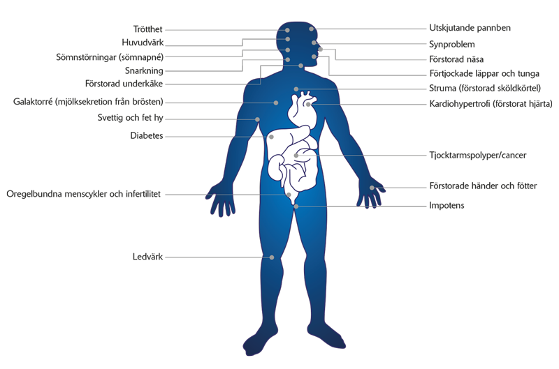

Sjukdomen akromegali – vad är det?
Har du hört talas om akromegali? En sällsynt sjukdom som ofta förblir odiagnostiserad länge, trots goda behandlingsmöjligheter.
Varje år upptäcks ca 40 nya fall av den sällsynta sjukdomen akromegali i Sverige. Att leva med den sällsynta sjukdomen kan påverka hälsa såsom livskvalitet.
Men, ju tidigare sjukdomen upptäcks, desto större är möjligheten för en lyckad behandling. Om den diagnostiseras och behandlas kan man ofta fortsätta leva som vanligt.
Se vår film för att få en djupare förstålse av sjukdomen och dess förlopp.
VILKA ÄR SYMTOMEN PÅ AKROMEGALI?
- Akromegali betyder ”förstorade extremiteter” eller ”förstorade händer och fötter”. Symtomen utvecklas vanligtvis gradvis, så du kanske knappt märker dem till en början.
- Trötthet och sömnstörningar är vanliga symtom på akromegali.
- Händer och fötter växer, så att ringar, klockor och skor inte passar längre.
- Även ansiktsdragen förändras:
- Den mest iögonfallande förändringen är ofta en förstorad underkäke, men näsan och läpparna kan också växa.
- Mellanrummet mellan tänderna kan också öka.
- Det är vanligt med kraftiga svettningar och fet hy.
- Stämbanden förtjockas, vilket ger en mörkare röst.
- Tungan kan växa i storlek och förtjockade mjukdelar i munnen kan orsaka snarkning, som i sin tur ger sämre sömnkvalitet.
- Ibland kan människor med akromegali utveckla diabetes.
- Hypertrofi (ökad tillväxt) av skelettdelar och ligament leder ofta till ledvärk.
- Karpaltunnelsyndrom drabbar många med akromegali, vilket orsakar stickningar och värk i händerna.
- Den godartade tumören gör att hypofysen växer och trycker på de omkringliggande vävnaderna:
- Detta kan ge svår huvudvärk.
- Svullnaden kan också trycka på synnerven som ligger precis ovanför hypofysen, vilket kan leda till synproblem.
- Huvudvärken kan även ha ett direkt samband med den ökade produktionen av tillväxthormon.
- Den godartade tumören i hypofysen kan också orsaka en förhöjd produktion av ett hormon som heter prolaktin. Det kan leda till impotens hos män och infertilitet och oregelbundna menscykler hos kvinnor.
Kliniska tecken och symtom på akromegali
